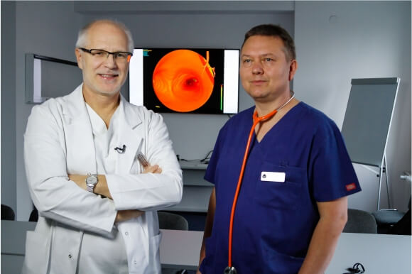
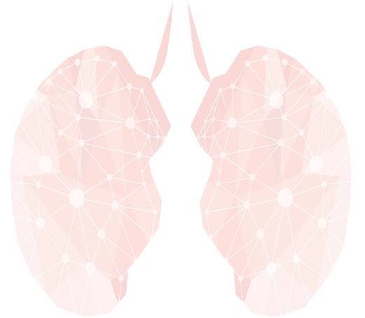

Prof. Rafal Krenke
Dr. Piotr Korczynski
1st Warsaw International Workshop on
Lung Cancer Diagnostics WAWWLC
MAY 15th , 2019
about us
Prof. Rafal Krenke MD, PhD, the head of the Department of Internal Medicine, Pulmonary Diseases & Allergy, Medical University of Warsaw.
He is the Deputy Dean of the First Faculty of Medicine at Medical University of Warsaw and the regional consultant in pulmonary diseases.
His scientific interests concentrate on pleural diseases, endoscopic techniques used in the diagnosis and treatment of lung diseases,
as well as on some aspects of obstructive pulmonary diseases.
Piotr Korczynski MD, PhD, the head of the Interventional Pulmonology Unit is a specialist in pulmonary medicine with experience in
providing medical services to both patients treated in outpatient clinic and inpatient department. His scientific interests focus on
pleural disorders and novel bronchoscopic procedures. Prof. Krenke and dr. Korczynski have huge experience in undergraduate
and postgraduate education in pulmonary diseases.

